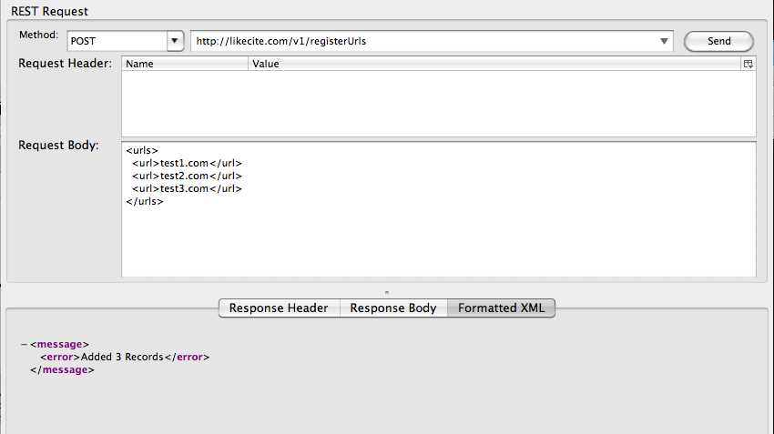
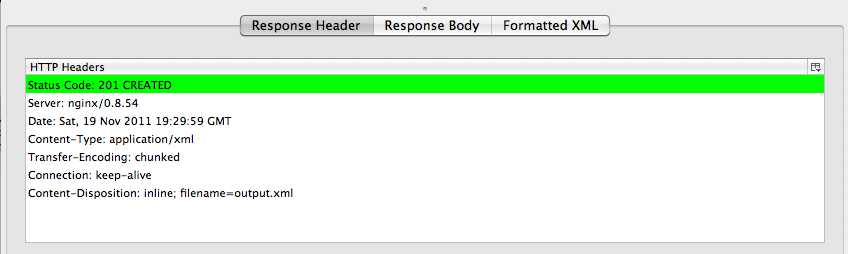
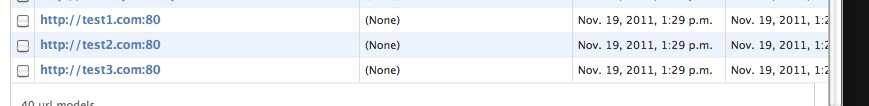

This endpoint takes a list of webservice urls in xml format and adds them to the list of known webservice urls. A deamon process will then scan these urls perodically, looking for more webservice urls that those services know about.
Before these urls are added, the POSTed XML is validated for structure and correctness; it is validate against a RelaxNG schema. The URL data itself is validated to ensure they they are proper urls, and is normalized to a standard format (this is to prevent duplicates).
Usage Example:


This shows the new urls listed in the Django admin interface after they have been added. http://likecite.com/admin/bcore/urlmodel/
